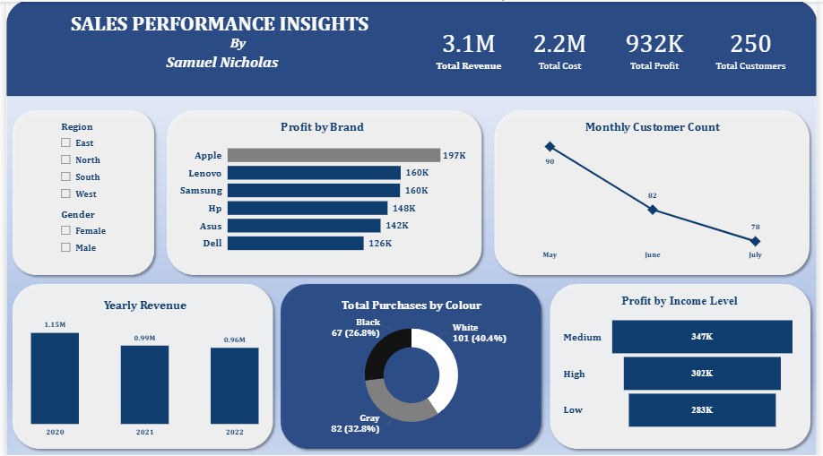

Sales Performance Dashboard
A Power BI dashboard developed to analyze revenue performance, profitability trends,
customer behavior, and product preferences across multiple brands and customer segments.
The project transforms transactional sales data into actionable insights that support
strategic business decision-making.
Project Overview
This project focuses on the development of an interactive Sales Performance Dashboard
in Power BI to evaluate business performance across revenue, cost, profit, and customer metrics.
The dashboard enables stakeholders to monitor key performance indicators, identify profitable
customer segments, and uncover trends that drive business growth.
Business Objective
The dashboard was designed to answer key business questions, including:
- Which brands generate the highest profit?
- How has revenue changed over time?
- Are customer numbers increasing or declining?
- Which income segments contribute most to profitability?
- What product characteristics influence purchasing decisions?
Dataset Overview
- Industry: Retail Sales
- Period Covered: 2020 – 2022
- Total Revenue: $3.1M
- Total Cost: $2.2M
- Total Profit: $932K
- Total Customers: 250
Key Fields
- Order Date
- Brand
- Revenue
- Cost
- Profit
- Region
- Gender
- Income Level
- Purchase Colour
Tools & Technologies Used
- Power BI
- DAX (Data Analysis Expressions)
- Excel
Data Preparation
- Validated revenue, cost, and profit relationships
- Standardized categorical fields such as Brand, Income Level, and Colour
- Organized date fields for trend analysis
- Created financial KPI measures using DAX
- Enabled dynamic filtering by region and gender
Dashboard Features
- KPI Cards for Revenue, Cost, Profit, and Customer Count
- Profit by Brand Analysis
- Monthly Customer Trend
- Year-over-Year Revenue Comparison
- Profit by Income Segment
- Purchase Distribution by Product Colour
- Interactive Region and Gender Filters
Key Insights
- Apple generated the highest profit, contributing approximately $197K.
- Revenue declined from $1.15M in 2020 to $0.96M in 2022.
- Customer activity decreased from 90 customers in May to 78 customers in July.
- The Medium Income segment produced the highest profit contribution at approximately $347K.
- White-coloured products accounted for 40.4% of all purchases.
Recommendations
- Investigate drivers behind declining revenue performance.
- Implement customer retention initiatives to improve engagement.
- Increase marketing efforts toward the Medium Income segment.
- Optimize inventory planning around high-demand product colours.
- Leverage successful brand strategies across lower-performing products.
Dashboard Preview

Conclusion
This project demonstrates my ability to build interactive Power BI dashboards,
develop financial KPIs using DAX, and transform raw business data into actionable insights.
The dashboard provides decision-makers with a clear view of performance trends and supports
data-driven business decisions.
← Back to Portfolio